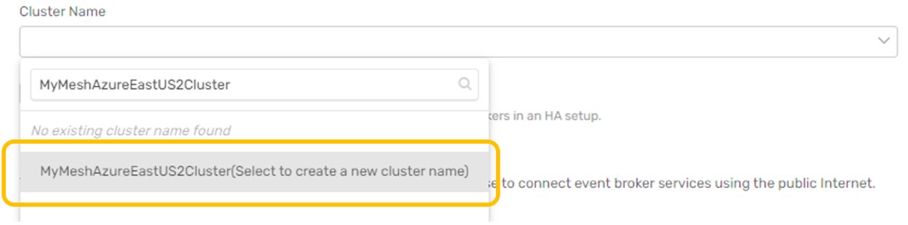
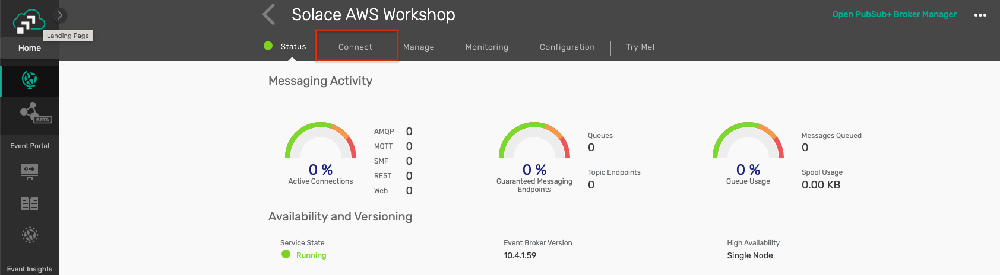

Day 1 of 5. Topics covered :
- Setup AEM Services
- Build an event mesh
- Deploy SAP CAP based Simulator on CloudFoundry
- Test the Simulator and publish SAP objects to the Event Mesh
Enter environment setup & prerequisites here
In this task, you will be creating two Enterprise AEM services, meshing them, and verifying your mesh health.
Before starting, it will be helpful to know what cloud provider and region your SAP environment is in, and the primary cloud provider and region where your cloud applications are deployed. The value of building a mesh topology is realized when placing your AEM services close to your event producing and consuming systems. If your SAP environment is running in an on-premises data center, you will use the geographic region of that site to help select an appropriate cloud location for that AEM service.
Create your first AEM service:
- From the SAP AEM Console, open the Cluster Manager.

- Click the + box to create a new AEM service.

- Name your service

- Pick Enterprise as the service type.

For now, keep the default service class and message storage settings. - Choose your cloud provider from the pull down list.
For the first AEM service, select the same IaaS (Infrastructure as a Service) provider and region where your SAP is running, the RISE provider and region where your SAP Cloud is running, or for an on-premises SAP pick a cloud provider and region closest to where your data center is located.
For the second AEM service, select the same provider and region where your cloud applications are located. If you have several, pick one that is distant from your SAP environment (you can expand your mesh later to include additional cloud locations).
- Click the Select Region box inside the map and select your cloud region.

This example shows selecting Azure as the provider and East US 2 (Virginia) as the region:
Please substitute your best provider and region as you make your selection and click OK. - Keep the Default Broker Version selection.

- Expand the Advanced Connection Options section.

- Enter the name for your cluster.
AEM services can be clustered within a cloud location to expand capacity horizontally. These clusters can then be interconnected across cloud locations to form a mesh. Today, we will create two clusters of one AEM service each and then interconnect them.
When clicking in the Cluster Name field, you will see a pull-down menu of existing clusters (the list will likely be empty) and a search box at the top.
Click in the search box and use your mesh name plus the cloud provider and region to define the name of your cluster. As you type, the search results will include the cluster name you are defining:
Remember to use your specific mesh name, provider and region followed by the word Cluster and then click your cluster name in the search result to select it:

Leave the Enable mate-link encryption checkbox selected. - Set the Message VPN Name.
By default, each AEM service has a unique VPN name. The message VPN is a logical messaging domain where events are shared by producing and consuming applications. For our evaluation exercise, we will use a single message VPN across both AEM services.
Click on the pencil icon to the right of the Message VPN Name field and set the name to your mesh name followed by the keyword VPN :
Leave the Port Configuration section default values for now. After reviewing all the settings on the Create Service page, click Create Service to launch your AEM service.
You will see a progress bar as the service is being started. Click the back-arrow at the top of the window next to your service name to return to the Cluster Manager view. You will see your AEM service instance with the progress bar.
You can proceed with the next step while your first AEM service is starting. - Repeat steps 2 through 10 for your second AEM service.
Substitute the name (Svc2) along with the appropriate cloud provider and region. IMPORTANT - For your second AEM service:- Location will be in a DIFFERENT region (with the same or different cloud provider).
- The cluster name follows the same pattern but is DIFFERENT from the first AEM service.
- You will use the EXACT SAME Message VPN Name as for the first AEM service.
 Click on each service to inspect the detailed status:
Click on each service to inspect the detailed status:
This example shows low utilization, version detail and cluster detail which includes the message VPN name which should be the same for both AEM services.
- Define a new mesh. From the SAP AEM Console, open the Mesh Manager:

In the top right, click the Create Mesh action to open the mesh definition.
Enter the same mesh name used when defining your AEM services.
- Add your AEM services to the mesh.
Click Add Service, then use the pull down search box to find and select your first service.
Click Add Service in the dialog to complete the action:
Click Add Service again and add your second service.
Mesh Manager will show the layout of your mesh geography.
Click Create Mesh to complete the mesh setup.
Mesh Manager will update the status of your mesh when configuration is complete.
- (Optional) Run a health check on your event mesh. From the Mesh Manager, click on your event mesh to open the status page :

Expand the Latest Health Check and click Run Health Check action:
The health check progress is shown, followed by the health check status:
The SAP Cloud Application Programming Model (CAP) is a framework of languages, libraries, and tools for building enterprise-grade services and applications. It guides developers along a ‘golden path' of proven best practices and a great wealth of out-of-the-box solutions to recurring tasks. CAP-based projects benefit from a primary focus on domain. Instead of delving into overly technical disciplines, we focus on accelerated development and safeguarding investments in a world of rapidly changing cloud technologies.
For more information on SAP CAP, you can refer to the link : SAP Cloud Application Programming Model
To showcase the integration capability of SAP CAP and AEM, we have created a CAP based Java microservice which will publish different SAP business object events into your AEM instance. This application can be deployed in your SAP CloudFoundry space.
1 : CloudFoundry CLI installation
To start with, we will be installing the CloudFoundry CLI for the deployment process. Follow the steps mentioned over here Installing the cf CLI for detailed instructions on this.
2 : Downloading the deployables artefacts
Download the following files artefact files and save them in the same directory:
- capm-erp-simulation-exec.jar : https://github.com/SolaceLabs/aem-sap-integration/blob/main/deployable/capm-erp-simulation-exec.jar
- manifest.yml : https://github.com/SolaceLabs/aem-sap-integration/blob/main/deployable/manifest.yml
3 : Login to CloudFoundry space
You can log in to the SAP CloudFoundry space in your account as below :
- Use the command :
cf loginto log in, which will prompt for your SAP login credentials. - Once authenticated, the details of the default cloudfoundry space will be displayed.
4 : Deploying the SAP Simulator application
- Navigate to the directory where the above deployable artefact files are saved.
- Run the command
cf pushwhich will upload the jar file and use the manifest.yml for properties. Note : this command will take some time to completely execute as it uploads the jar deployable and also start the application. - Once the command is completely executed, run the command
cf appsto view a listing of the apps in your cloudfoundry space - Verify that the app capm-erp-simulation is deployed and started
1 : Accessing the SAP Simulator application
- Navigate to the Cloud Foundry environment in your SAP BTP Cockpit
- You should see a screen like below :

- Click on the application name : capm-erp-simulation and enter the application overview screen.

- Click on the application route as highlighted below. Note : this route url will differ from for different SAP BTP accounts.

2 : Connecting to SAP AEM and running the simulator
- As you click on the above application route url, you will be redirected to the simulator screen as below
 Here you can connect to your SAP AEM instance to publish events.
Here you can connect to your SAP AEM instance to publish events. - The connection parameters for the simulator can be captured from below : 
 Enter the appropriate value as specified below :
Enter the appropriate value as specified below : - Host URL : Public Endpoint
- VPN Name : Message VPN
- Username : Username
- Password : Password

- Once the broker is successfully connected, you will be displayed a screen as below :

- You can choose which events to simulate and its frequency by using the sliders. As you change a schedule, the submit button in the bottom will be enabled

- In case you want to disable any of the events, then pull the slider to 0 and click submit and the event will be disabled immediately

3 : Test the incoming events
✅ < Fill IN TAKEAWAY 1>
✅ < Fill IN TAKEAWAY 2>
✅ < Fill IN TAKEAWAY 3>

Thanks for participating in this codelab! Let us know what you thought in the Solace Community Forum! If you found any issues along the way we'd appreciate it if you'd raise them by clicking the Report a mistake button at the bottom left of this codelab.